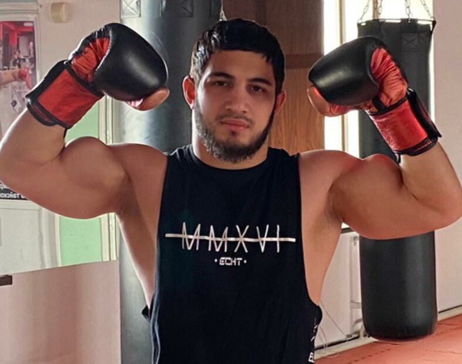

Тренeр ск. "Djigit" по Тайскому боксу
Лом-Али Муцаев является чемпионом мира, европы и победителем многих соревнований республиканского, всероссийского и международного уровня по разным видам единоборств. А выступая в профессиональных боях по тайскому боксу и проведя 9 боев, он одержал победы во всех поединках, 5 из которых завершил нокаутом. Свою бойцовскую карьеру Лом- Али пришлось приостановить, так как подготовка к боям на профессиональном уровне занимает практически все время спортсмена. Сейчас для него в приоритете обучение молодого поколения гудермесских бойцов “Муай Тай”. И надо отметить, что в этом деле Лом-Али с воспитанниками достигли внушительных результатов. «Гумс»Контакты:
Адрес: Спорткомплекс "Djigit"
Инстаграм: lom_mutsaev